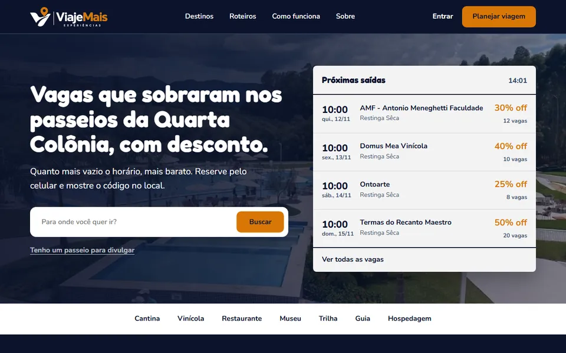

Campeão do Ideathon 2026
Viaje Mais
PWA que vende com desconto as vagas que sobram em passeios, vinícolas e atrações da Quarta Colônia (RS).
- HTML
- CSS
- JavaScript
- Node.js
- PWA
Ver o código no GitHub Demo ainda não publicada
Ler o estudo de caso
Problema
Passeios da Quarta Colônia saem com vagas sobrando: o dono gasta o mesmo e ganha menos. Ao mesmo tempo, muitos turistas deixam de passear por achar caro.
Abordagem
Um PWA que reúne as vagas do dia e dá mais desconto quanto mais vazio estiver o horário. Desenvolvi o protótipo funcional em HTML, CSS e JavaScript, com um back-end próprio em Node.js que usa só os módulos nativos, sem build e sem dependências. Ele cuida do login com senha criptografada, das sessões, do cálculo do desconto, das reservas e da validação única dos vouchers, que funciona até sem internet. Os dados ficam em um arquivo JSON. O projeto foi feito em equipe, e eu fui o desenvolvedor principal, com auxílio de IA.
Desafios
Fazer o voucher funcionar sem internet e sem poder ser falsificado. Também precisei descobrir como administrar três agentes de IA e coordenar o trabalho deles juntos, sem que um afetasse o trabalho do outro.
Resultado
A equipe foi campeã do Ideathon 2026 da Antonio Meneghetti Faculdade, e o projeto segue para o StartCUP.
O que eu faria diferente
O layout do site. Acredito que ele pode ficar mais bonito com o tempo.